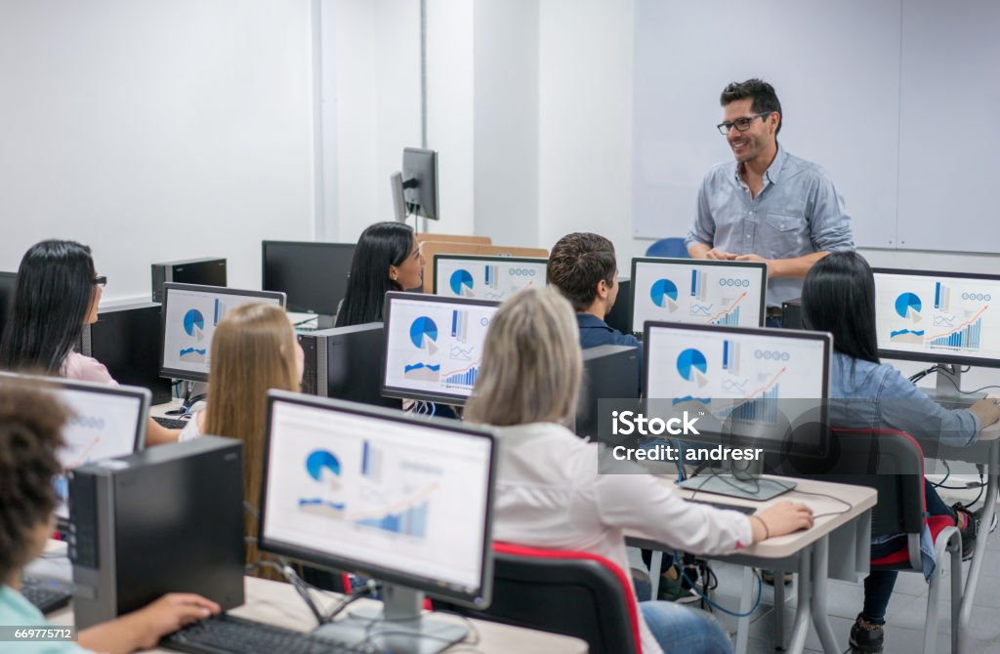
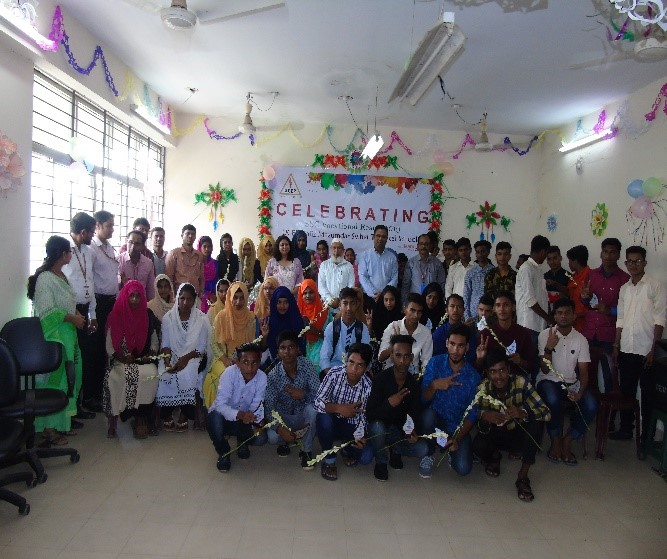
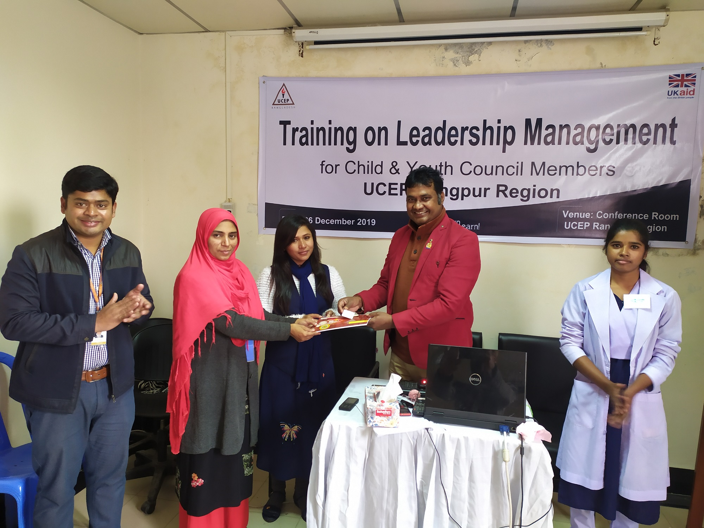

তথ্য প্রযুক্তি ক্ষেত্রে ক্যারিয়ার গড়ার বিশাল সম্ভাবনা তুলে ধরা।দৈনন্দিন কাজ এবং ব্যবসায়িক ক্ষেত্রে প্রযুক্তির ব্যবহারকে কার্যকর করে তোলা।
বাজারের চাহিদা অনুযায়ী শিক্ষার্থীদের তৈরি করে কর্মজীবন সুরক্ষিত করা। হাতে দক্ষতা থাকলে কখনোই কাজ হারানোর ভয় থাকে না এই বার্তা দেওয়া।
আমাদের প্রধান লক্ষ্য হলো অসহায় এবং পিছিয়ে পড়া মানুষের পাশে থেকে মহান আল্লাহর সন্তুষ্টি অর্জন করা। আমরা বিশ্বাস করি মানবিকতাই সেরা ধর্ম।
